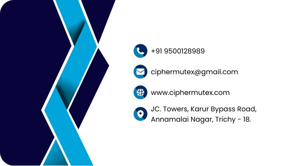
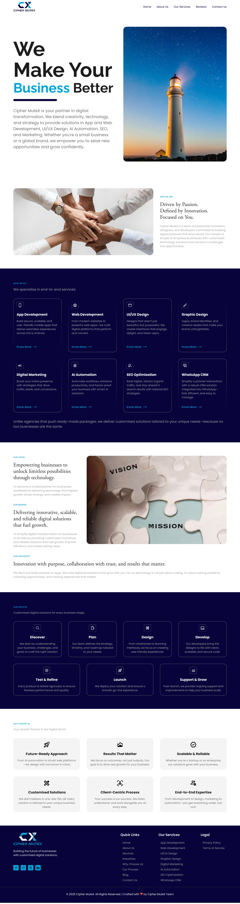
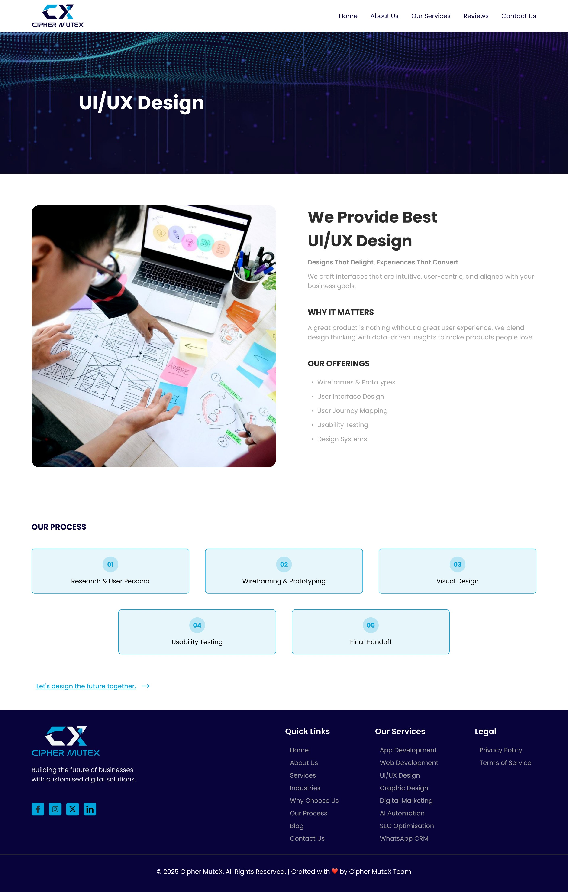

Graphic
Design.
Institutional visual communication for the Mother Teresa Group — organised by creative format so each type of work can be explored independently.
02 / Graphic design
Explore by category
Browse the creative formats below. Each category is kept separate from the website case studies.
01. Posters & Promotional Creatives
Institution / admissions / campaigns
02. Brochures
Institutional / course information

03. News Advertisements
Print advertising

04. Banners & Seasonal Campaigns
Group communicationArtwork previews are displayed in their original proportions. Open images in the browser to inspect them at full size.